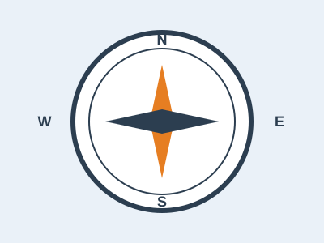

My 10 Favorite Websites

Below are ten websites I visit often, with a short description of each.
1. Biblegateway
Provides access to multiple Bible translations and study tools. It is especially useful for comparing versions side by side and deepening personal or group Bible study.
2. W3Schools
A great resource for learning web development and coding basics. It offers interactive tutorials, examples, and exercises that make it easy to practice HTML, CSS, JavaScript, and more.
3. Cisco
Networking resources and certifications. It is a trusted source for building skills in routing, switching, cybersecurity, and enterprise networking solutions.
4. Microsoft
Tools and resources for productivity and ICT innovation. From Office applications to cloud services like Azure, it supports both individual users and organizations in achieving more.
5. Udemy
Online learning platform with ICT and professional courses. It allows learners to study at their own pace, with practical video tutorials and certificates of completion.
6. Khan Academy
Free learning resources across multiple subjects. Its interactive exercises and instructional videos make complex topics easier to understand.
7. Stack Overflow
Community support for coding and troubleshooting. It is a valuable resource for troubleshooting, sharing solutions, and learning programming best practices.
8. GitHub
Collaboration and version control for coding projects. It lets developers manage code repositories, track changes, and collaborate on open‑source or private projects.
9. ResearchGate
Access to academic research and collaboration. It also enables researchers to collaborate, share findings, and connect with peers worldwide.
10. LinkedIn
Professional networking and career development. It allows users to showcase their skills, connect with industry professionals, and engage with organizations globally.